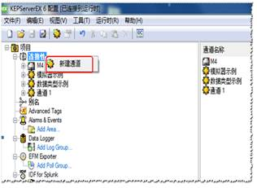
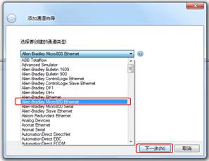
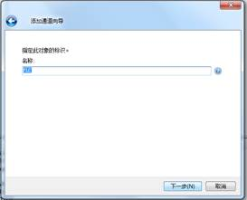
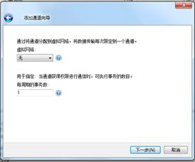
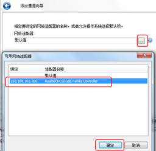
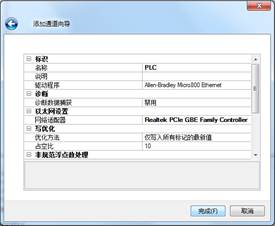
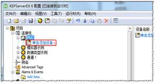
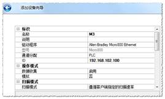

在KEPServer中配置OPC
步骤1：打开KEPSever进入界面如下，点击选择“连接性”，右键“新建通道”；随后在下拉选项中选择“Allen-Bradley Micro800 Ethernet”，点击下一步。

步骤2：在“添加通道向导”界面上，通道名称务必填写为“PLC”；下一步默认设置，无需更改。
 
步骤3：到选择网络适配器时，在下拉框中选择连接PLC控制器的网口，其该网卡的IP地址应当提前设置为“192.168.102.200/255.255.255.0”；确认后下一步默认，直至完成通道建立。。
 
步骤4：通道建立完成后，“单击添加设备”，指定此对象名称必须为“XM”。

步骤5：下一步指定PLC的ID，即IP地址：192.168.102.100；后续默认设置无需更改，直至添加设备完成。

以上设置完成，工控机和PLC已经完成建立连接。